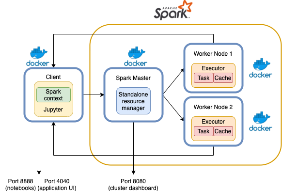

13 Running the labs
The hands-on part of the course lives in the course repository, not in these notes. These pages are a guide to it: they follow each notebook in order, explain what every step is doing and why, and point out what to look at while it runs. Keep the notebook open next to the guide.
13.1 Where the code is
The labs come from the professor’s repository jpazzini/MAPD-B; my fork PhyAMR/MAPD-B-code (branch 2026) is cloned next to these notes:
2sem/MAPDB/
├── notes/ ← these notes
└── code/ ← the labs (clone of PhyAMR/MAPD-B-code)
├── mysql/ docker-compose.yml, docker/, dbs/, notebooks/
├── parallel/ plain Python scripts
├── spark/ docker-compose.yml, datasets/, notebooks/
├── dask/ docker-compose.yml, notebooks/ (datasets inside)
└── kafka/ docker-compose.yml, notebooks/Every notebook exists twice: LectureN.ipynb (with blanks to fill in) and LectureN_solutions.ipynb. Work on the first one; the guides follow the solutions.
To pick up new material from the professor:
cd code
git fetch upstream && git merge upstream/202613.2 What a lab looks like
Every lab except parallel/ is a small cluster simulated on your laptop with docker compose. Each box in the picture below is a separate container, i.e. a separate “machine” with its own processes and its own network address:

The pattern is always the same:
| Role | What it does | Example |
|---|---|---|
| Server / head node | the service you are learning about | MySQL server, Spark master, Dask scheduler, Kafka broker |
| Worker nodes | do the actual processing (distributed labs only) | spark-worker, dask-worker |
| Client | a Jupyter server where you type code | jupyter-notebook / jupyter |
The Jupyter container is technically redundant (you could install the client libraries locally), but it guarantees everybody has the same versions and makes the client/server split explicit: your notebook is a client talking to a remote cluster over the network, exactly as it would be on a real one.
13.3 The stacks at a glance
| Lab | Folder | Services | Open in browser | Extra preparation |
|---|---|---|---|---|
| MySQL | code/mysql |
db, jupyter |
Jupyter localhost:1234 |
build the mapd_notebook image; download IMDb_pruned.sql |
| Parallel | code/parallel |
none, plain Python | none | Python ≥ 3.13 (and optionally ≤ 3.9) |
| Spark | code/spark |
spark-master, spark-worker, jupyter-notebook |
Jupyter :1234, master UI :8080, app UI :4040 |
none |
| Dask | code/dask |
dask-scheduler, dask-worker, jupyter-notebook |
Jupyter :1234, dashboard :8787 |
none |
| Kafka | code/kafka |
Spark stack + kafka-broker |
Jupyter :1234, :8080, :4040 |
none |
All stacks use port 1234 for Jupyter, so run one lab at a time.
13.4 Start, use, stop
cd code/spark # 1. ALWAYS cd into the lab folder first (see below)
docker compose up # 2. start the cluster (add -d to get the terminal back)
# 3. open http://localhost:1234 → notebooks/
docker compose down # 4. stop and remove the containers when doneUseful variations:
docker compose up --scale spark-worker=2 # more workers (same for dask-worker)
docker compose logs -f jupyter-notebook # follow one service's output
docker compose exec spark-master bash # open a shell inside a running service
docker compose ps # what is running, and on which portsdocker compose exec <service> bash is the easiest way to “log into a node”. The notebooks sometimes say docker ps → copy the container ID → docker exec -it <ID> bash; the compose exec form does the same thing without looking up IDs.
13.5 Three things that confuse everybody
13.5.1 1. Run docker compose from inside the lab folder
Every compose file mounts the current directory into the containers:
volumes:
- $PWD:/mapd-workspace$PWD is your shell’s current directory. If you start the stack from somewhere else (e.g. docker compose -f spark/docker-compose.yml up from code/), the containers see the wrong folder and the notebooks cannot find datasets/.
The mount also means the folder is shared: what you save in Jupyter appears on your disk, and files you drop into the folder (e.g. a database dump) are visible inside the containers at /mapd-workspace/....
13.5.2 2. Two kinds of addresses: service names and localhost
Inside the Docker network, containers find each other by service name: the notebook connects to db, spark://spark-master:7077, dask-scheduler:8786, kafka-broker:9092. These names mean nothing to your browser.
From your laptop you only reach what the compose file publishes with ports: ("8080:8080" = host port : container port), always as localhost:<port>.
| You are… | …and want to reach | Use |
|---|---|---|
| code in a notebook | the MySQL server | host="db" |
| code in a notebook | the Spark master | spark://spark-master:7077 |
| your browser | the Spark master UI | http://localhost:8080 |
| your browser | the Spark application UI | http://localhost:4040 |
This is why the “Spark UI” link printed by spark in the notebook does not work: it points at the container’s internal hostname. Use localhost:4040 instead.
13.5.3 3. The notebook is not on the cluster
Variables in the notebook live in the client (the Jupyter container). Distributed objects (an RDD, a Spark or Dask DataFrame) live in the workers; the client only holds a handle to them. Anything that brings data back (collect(), toPandas(), compute(), gather()) moves it over the network into the client’s memory, which is the most common way to crash a lab with an out-of-memory error.
13.6 From this laptop cluster to the cloud
The Docker setup is a scale model of how distributed systems are deployed for real. Every piece has a production counterpart, and recognising them is half of “learning to use the cloud”:
| In the lab | What it is | On a real cloud / cluster |
|---|---|---|
Docker image (jpazzini/mapd-b:spark-worker) |
a frozen, portable filesystem + program | the same images, pulled from a registry (Docker Hub, GitHub/GitLab registry, a private registry) |
| container | an isolated process with its own network address; much lighter than a VM, shares the host kernel | containers on virtual machines (e.g. CloudVeneto, AWS EC2) or a Kubernetes pod |
docker-compose.yml |
declares services, networks, volumes on one host | Kubernetes manifests / Helm charts declare the same across many hosts; or one VM per role |
service name spark-master |
DNS name resolved inside the network | service discovery: Kubernetes Services, internal DNS, fixed private IPs |
ports: "8080:8080" |
expose one service to the outside | load balancers, ingress, or an SSH tunnel (ssh -L 8080:localhost:8080 vm) |
--scale spark-worker=N |
horizontal scaling, by hand | autoscaling groups, Kubernetes replicas, Spark dynamic allocation, Dask adaptive scaling |
$PWD mounted as /mapd-workspace |
shared local disk | a distributed file system (HDFS) or object storage (S3 / Ceph), read in parallel by every node |
SPARK_WORKER_MEMORY=512m |
resource limits per node | VM flavour (vCPUs, RAM) and per-executor/per-worker limits |
Two ideas from the theory chapters are worth keeping in mind in every lab:
- Horizontal scaling (Storage): instead of a bigger machine, add more identical ones. It only pays off if the work can be split into independent pieces, which is why partitions are central in every framework.
- Move computation to the data (Distributed processing): networks are slow compared with local disks and memory. Frameworks send code to where the data is and bring back only small results. In the labs everything is on one laptop, so you won’t feel the network, but write the code as if you did.
The managed-service versions of what you run here are, for reference: MySQL → AWS RDS / Google Cloud SQL; Spark → AWS EMR, Google Dataproc, Databricks; Dask → Coiled, Dask on Kubernetes; Kafka → AWS MSK, Confluent Cloud. They remove the operations work, but the programming model, and everything you learn in these labs, is the same.
13.7 Troubleshooting
| Symptom | Cause / fix |
|---|---|
port is already allocated |
another lab (or something else) is using 1234/8080. docker compose down in the other folder, or docker ps to find it |
notebook cannot find datasets/... |
stack started from the wrong folder (see §1); down, cd, up again |
pull access denied for mapd_notebook (MySQL) |
the Jupyter image for MySQL is built locally, see MySQL setup |
| very slow on Apple Silicon | images are linux/amd64 and run under emulation; expected |
files created from Jupyter are owned by root on Linux |
containers run as root; sudo chown -R $USER . in the lab folder |
| a stream / consumer cell never ends | that is by design for streaming code; interrupt the kernel (■) or wait for the timeout |
| things behave strangely after many runs | docker compose down and up again for a clean cluster |